Introductie tot Git en FAIR development flows
![]()
16 Dec 2025
Introduction

Version Control
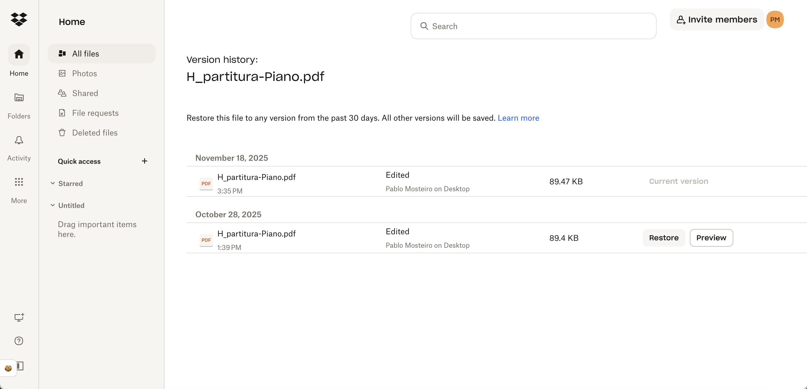Git
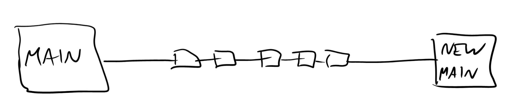Git - Revert
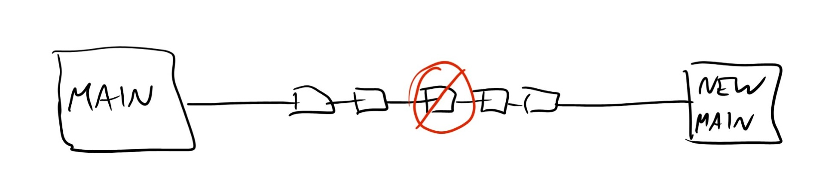Git - Branch and Merge
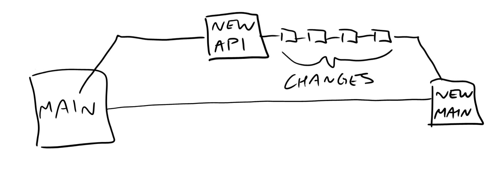Git - Branch, Merge, Revert
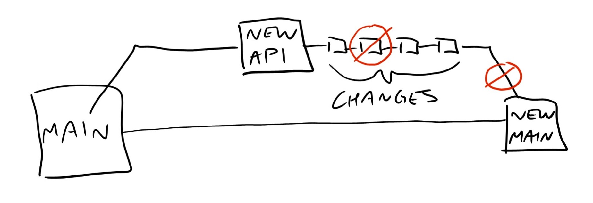GitHub
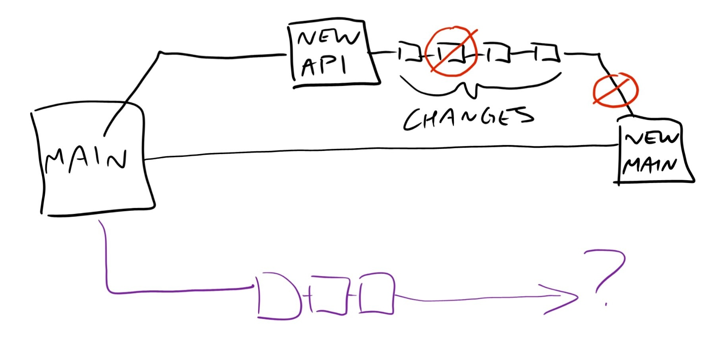GitHub - Collaborate
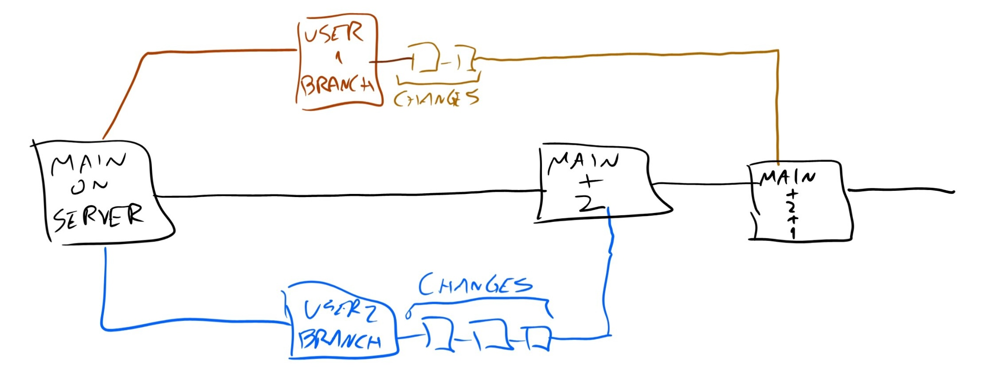This course on GitHub
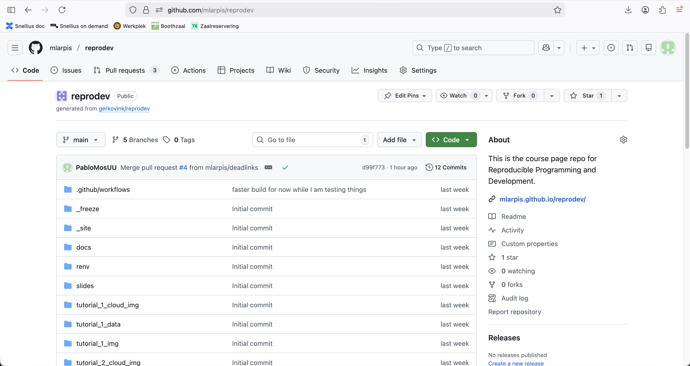Installing GitHub packages in RStudio
Command line interface vs. GUI
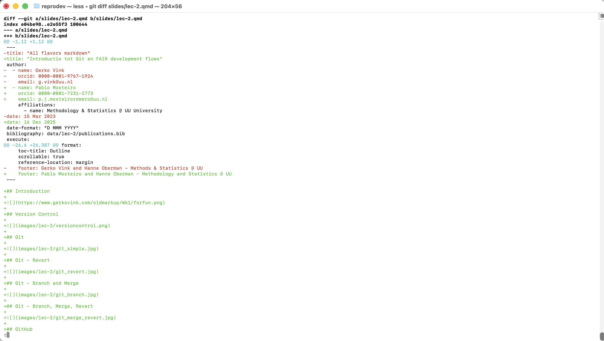 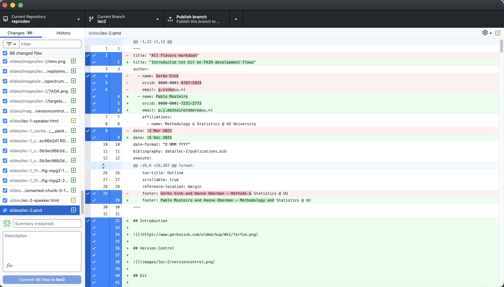
Linking GitHub and RStudio
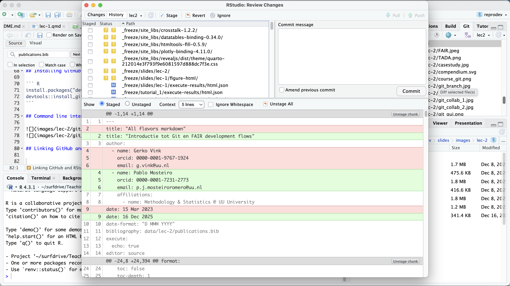Making research reproducible
- reproducible documents
- FAIR
- research compendiums

FAIR
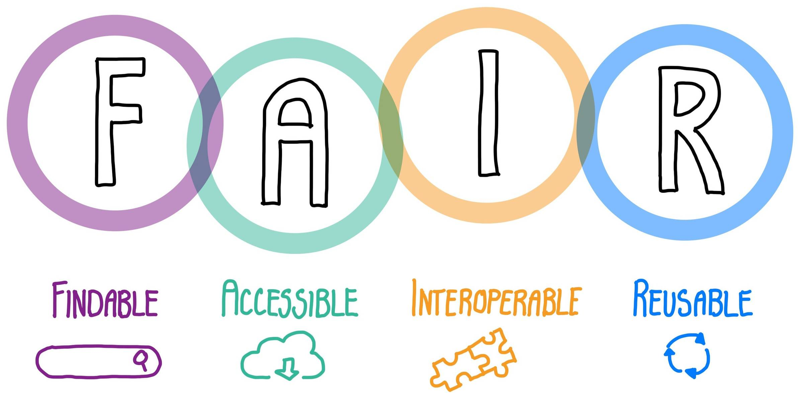
Gold standard?

In practice
 Research Data Management Support workshop:
Research Data Management Support workshop:
Steps
- Think about a good folder structure
- Split up ‘read-only’, ‘human-generated’, and ‘project-generated’ files
- Create folder structure (main directory and sub directories)
- Add a landing page in the form of a README document
- Make the compendium executable (to automatically generate the results; optional)
- Make the compendium into a git repository (optional)
- Add all files needed for reproducing the results of the project
- Avoid ‘hard coded’ parameters or human intervention in the execution
- Make the compendium as clean and easy to use as possible
- Include a citation file and a LICENSE file with info on how it can be used
- Publish your compendium
- E.g. on Zenodo (optional, more on this in the last course week)
Adapted from The Turing Way
Next session
Git en GitHub tutorial
- Deelnemers leren samenwerken aan code middels git en GitHub. De basis voor deze tutorial is de groepsopdracht die in de ochtend is gemaakt.
References and further reading
Baker, M. (2016). 1,500 scientists lift the lid on reproducibility. https://www.nature.com/articles/533452a
Bryan, J., & TAs, T. S. 545. (n.d.-a). Chapter 33 Why and how we automate data analyses + examples | STAT 545. Retrieved October 30, 2023, from https://stat545.com/
Checklist. (n.d.). Retrieved October 31, 2023, from https://guide.esciencecenter.nl/#/best_practices/checklist
Checklist for a Software Management Plan. (n.d.). https://doi.org/10.5281/zenodo.2159713
Drost, N., Spaaks, J. H., Andela, B., Veen, L., Zwaan, J. M., Verhoeven, S., Bos, P., Kuzak, M., Werkhoven, B., Attema, J., Hidding, J., Hees, V., Martinez-Ortiz, C., Spreeuw, H., Borgdorff, J., Leinweber, K., Diblen, F., Oord, G., Goncalves, R., … Bakker, T. (2020). Netherlands eScience Center—Software Development Guide (v0.9.1). Zenodo. https://doi.org/10.5281/ZENODO.4020564
References and further reading
Gentleman, R., & Temple Lang, D. (2007). Statistical Analyses and Reproducible Research. Journal of Computational and Graphical Statistics, 16(1), 1–23. https://doi.org/10.1198/106186007X178663
Ivimey-Cook, E. R., Culina, A., Dimri, S., Grainger, M., Kar, F., Lagisz, M., Moran, N. P., Nakagawa, S., Roche, D. G., Sanchez-Tojar, A., Windecker, S. M., & Pick, J. L. (2025). TADA! Simple guidelines to improve code sharing. https://ecoevorxiv.org/repository/view/9806/
Jiménez, R. C., Kuzak, M., Alhamdoosh, M., Barker, M., Batut, B., Borg, M., Capella-Gutierrez, S., Hong, N. C., Cook, M., Corpas, M., Flannery, M., Garcia, L., Gelpí, J. L., Gladman, S., Goble, C., Ferreiro, M. G., Gonzalez-Beltran, A., Griffin, P. C., Grüning, B., … Crouch, S. (2017). Four simple recommendations to encourage best practices in research software (6:876). F1000Research. https://doi.org/10.12688/f1000research.11407.1
Knuth, D. E. (1984). Literate Programming. The Computer Journal, 27(2), 97–111. https://doi.org/10.1093/comjnl/27.2.97
Marwick, B., Boettiger, C., & Mullen, L. (2018). Packaging Data Analytical Work Reproducibly Using R (and Friends). The American Statistician, 72(1), 80–88. https://doi.org/10.1080/00031305.2017.1375986
Navarro, D. (2025, May 18). When good pseudorandom numbers go bad. Notes from a Data Witch. https://blog.djnavarro.net/posts/2025-05-18_multivariate-normal-sampling-floating-point/
NHANES Questionnaires, Datasets, and Related Documentation. (n.d.). Retrieved October 30, 2023, from https://wwwn.cdc.gov/nchs/nhanes/continuousnhanes/default.aspx?Begi-nYear=2015
References and further reading
Nüst, D., Ostermann, F., Sileryte, R., Hofer, B., Granell, C., Teperek, M., Graser, A., Broman, K., Hettne, K., & Clare, C. (2019). AGILE Reproducible Paper Guidelines. https://doi.org/10.17605/OSF.IO/CB7Z8
Peng, R. D. (2011). Reproducible Research in Computational Science. Science, 334(6060), 1226–1227. https://doi.org/10.1126/science.1213847
Sandve, G. K., Nekrutenko, A., Taylor, J., & Hovig, E. (2013). Ten Simple Rules for Reproducible Computational Research. PLOS Computational Biology, 9(10), e1003285. https://doi.org/10.1371/journal.pcbi.1003285
Sayre, F., & Riegelman, A. (2019). Replicable Services for Reproducible Research: A Model for Academic Libraries | Sayre | College & Research Libraries. https://doi.org/10.5860/crl.80.2.260
Telford, R. J. (2023, September 6). Enough Markdown to Write a Thesis. https://biostats-r.github.io/biostats/quarto/
References and further reading
The Turing Way Community (2022). The Turing Way: A handbook for reproducible, ethical and collaborative research (1.0.2) [Computer software]. Zenodo. https://doi.org/10.5281/ZENODO.3233853
The Turing Way Community & Scriberia. (2023). Illustrations from The Turing Way: Shared under CC-BY 4.0 for reuse. Zenodo. https://doi.org/10.5281/ZENODO.3332807
TIER Protocol 4.0 | Project TIER | Teaching Integrity in Empirical Research. (n.d.). Retrieved October 30, 2023, from https://www.projecttier.org/tier-protocol/protocol-4-0/
Trisovic, A., Lau, M. K., Pasquier, T., & Crosas, M. (2022). A large-scale study on research code quality and execution. Scientific Data, 9(1), Article 1. https://doi.org/10.1038/s41597-022-01143-6
Utrecht University (2023a, September 26). Best Practices for Writing Reproducible Code. https://utrechtuniversity.github.io/workshop-computational-reproducibility/
Utrecht University (2023b, October 24). Writing Reproducible Manuscripts in R & Python. https://utrechtuniversity.github.io/workshop-reproducible-manuscripts/

Pablo Mosteiro and Hanne Oberman - Methodology and Statistics @ UU